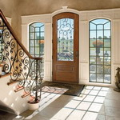
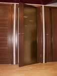
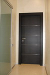
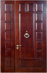
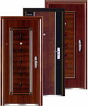
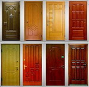

Виды и классификация дверей


Любой дом или квартира начинается для нас с двери. Основной характеристикой качества уюта и удобства в квартире напрямую зависит от того, чем разделено пространство в помещении.В настоящее время производители предлагают огромный выбор всевозможных видов и типов дверей, импортного и отечественного производства, из стекла, дерева, пластика, алюминия. В статье представлена подробная классификация по видам дверей.
Существуют разнообразные виды и классификации дверей.
I. По материалам, из которых изготовлена дверь, выделяют двери:
1. деревянные.

Имеют неоспоримые достоинства. Существует великое многообразие рисунков и текстур деревянных дверей, что позволяет сделать дверь важной деталью интерьера. В этом случае простая дверь может кардинально преобразить интерьер, сделать его классическим или ультрасовременным.Выбор дверей разнообразен, что обусловлено множеством потребностей и вкусов покупателей. Дерево - это экологически чистый природный материал, поэтому двери, изготовленные из него, обладают сильной энергетикой. Природная древесина позволяет нам уберечься от действия нежелательных для организма веществ. Немаловажно также такое преимущество деревянных дверей, как долговечность и прочность. Кроме того, среди разнообразия деревянных дверей можно легко подобрать для себя подходящую по цене.
Например, купив дверь из массива дуба, мы заплатим достаточно много (но при этом получим ряд преимуществ), а купив дверь из сосны, потратим меньше. Дерево примечательно тем, что существуют ценные его породы и способы изготовления дверей из них, а есть и значительно более дешевые. Так двери из сосны замечательно служат, но и очень удешевляют дверь и делают ее доступнее.
2. алюминиевые.
Известны своей устойчивостью к агрессивной среде, что позволяет продлить сроки использования такой двери. Кроме того, алюминиевые двери огнестойкие, шумоустойчивые и имеющие высокие теплоизоляционные свойства. Поэтому такие двери очень конкурентоспособны на современном рынке дверей.
Алюминиевые двери обладают высокой устойчивостью к коррозии и менее массивны, чем железные двери. Характеристики алюминия таковы, что двери из него являются достаточно безопасными. Алюминиевые двери взломостойки, благодаря специальным принадлежностям и элементам, например, многочисленным точкам замыкания, это обеспечивает дому необходимую безопасность.
К отрицательным качествам алюминиевых дверей можно отнести энергоемкость процесса их изготовления, что делает такую дверь в 2-3 раза дороже, например, двери из ПВХ. Другой недостаток дверей из алюминия в том, что при любом контакте алюминия с другими металлами (например, из дождевой воды) может возникнуть реакция, приводящая к полной коррозии алюминия.
3. стальные.

Это один из самых надежных типов дверей для защиты дома. Современные стальные двери имеют весомые преимущества, а также дизайнерский подход к их изготовлению. Многие стальные двери обрабатываются антикорром, а при их изготовлении используется сталь высокой толщины. Стальная дверь превосходно звукоизолирует, защищает от холода и посторонних запахов, если это профессионально изготовленная дверь. Такая дверь не горит.4. стеклянные.
Имеют свойство зрительно расширять пространство помещений, поэтому получили всеобщее призвание. При перепаде температуры всегда будет хороший притвор (в отличие от деревянной двери). Поскольку стекло легко режется, то можно создать любой оригинальный узор стекла, который будет соответствовать интерьеру дома. Стеклянная дверь позволяет сделать дом светлее и уютнее. К недостаткам стеклянных дверей следует отнести их высокую звукопроницаемость.
5. шпонированные.
Шпон представляет собой тонкий срез с дерева различных пород толщиной как тонкий картон. Шпоном оклеивают дверные полотна. Такие звери значительно дешевле деревянных, но некачественно изготовленные.
6. ламинированные.
Представляют собой гладкие двери с наклеенным на них ламинатом, окрашенным различными цветами или декорированным под различные породы дерева.
7. кашированные.
Похожи на ламинированные, но представляют собой их более дешевый вариант, т.к. это покрытие менее износостойкое, чем ламинат.
8. мезонитовые.
Производятся из прессованной древесины мелкодисперсных фракций (МДФ). Такие двери долговечные и прочные. Отделку лицевой поверхности двери выполняют из ламината или шпона ценных пород древесины.
9. пластиковые.
Отделываются натяжкой нескольких слоев пластика, либо красятся. Их особенность и преимущества в легкости, неограниченности цветовой гаммы и уникальности дизайна.
10. комбинированные.
Производятся с применением различных материалов, это увеличивает возможности придания им необходимых форм, дизайна и разнообразие технических характеристик.
II. По способу открывания выделяют двери:
1. распашные.

Могут открываться в одну сторону или в обе. Распашными могут быть как внутренние, так и наружные двери. Могут быть глухими и остекленными. Распашные двери изготовляют из любого материала, с любым дизайнерским решением. Предусмотрены двери с порогом и без. При этом порог бывает автоматически опускающимся, а это повышает тепло- и звукозащитные характеристики дверей. К недостаткам распашных дверей относится необходимость предусматривать пространство для открывания, что не всегда удобно, если помещение тесное.2. раздвижные.
Позволяют создавать любые интерьеры, с их помощью легко осуществлять перепланировку внутреннего пространства. Такие двери все более популярны в жилых домах и общественных помещениях (офисах, конференц-залах и др.)
Раздвижными могут быть как внутренние, так и входные в здания двери, с применением современной автоматики. Раздвижные двери широко используются для шкафов-купе. Раздвижные двери уходят в полость внутри стены или движутся параллельно ей. Бывают сдвигающимися (из одного полотна) или раздвигающимися (из двух). Двери крепятся на верхней, нижней или обеих направляющих.
Если дверь крепится на верхней направляющей, то из-за отсутствия порожка плоскость пола зрительно сокращается, но при сквозняке дверь «гуляет». Двери на нижней или на двух направляющих устойчивее, но есть минус - появляется порожек (при желании его можно «утопить» в пол). Раздвижные двери - грамотное решение для разделения смежных помещений, в этом случае они играют роль своеобразной «занавески» или ширмы.
В качестве отделки дверей используются современные материалы: шпон, стекло, зеркала, ламинат и их комбинации. Идеальное решение для современного дома - двери-купе из матового стекла, играющего роль зонирующего элемента: стекло оставляет ощущение того, что дальше есть другие помещения, из-за своей прозрачности.
3. складные.
Складные двери объединяют отдельные секции, которые движутся по направляющей в дверном проеме. Они могут быть изготовлены из цельной древесины, из пластика, покрытого натуральной древесиной, и из других материалов. Можно использовать и вставки из стекла при производстве таких дверей. Складные двери могут быть только как внутренними.
4. качающиеся.
Распахиваются в обе стороны, как в метро, их очень любят домашние животные. Но в продаже они почти не встречаются, только в специализированных магазинах.
5. конюшенные.
Являются разновидностью распашных. Включают в себя две половинки, верхнюю и нижнюю, имеющие каждая петли и замки.
III. В зависимости от числа полотен.
Двери подразделяют на однопольные, двупольные и полуторные (с двумя полотнами неравной ширины).
Трех- и четырехпольные двери используются очень редко.

Число полотен двери определяется шириной проема в стене, которая, в свою очередь, зависит от противопожарных требований и функционального назначения помещения. Все двупольные двери требуют дополнительных элементов запирания - шпингалетов.Исключение составляют качающиеся двери. Створка, закрепленная шпингалетами, становится частью дверной коробки, но ее в любой момент можно открыть, расширив дверной проем.
IV. По заполнению дверного полотна двери бывают остекленными и глухими.
Например, балконные двери всегда делают остекленными, энергосберегающими.
Внутренние двери также часто остеклены с целью пропускания света в соседнее помещение или искусственного расширения границ комнат.
Стекла могут быть прозрачными, матовыми, с рельефным узором, различных цветов. Форма остекления может быть различной: прямоугольной, арочной, круглой, треугольной.
V. По функциональному назначению выделяют:
1. двери для жилых зданий;
2. двери для общественных зданий;
3. специальные двери, подразделяемые на:
огнезащитные двери;
«защитные» (противоударные, пуленепробиваемые, противовзломные) двери;
двери повышенной звукоизоляции;
энергосберегающие двери;
водостойкие двери;
другие двери (например, защищающие от рентгеновского излучения).
VI. По месторасположению двери подразделяются на:
входные,
межкомнатные,
гостиные,
коридорные,
лестничные,
кухонные,
балконные,
чердачные.
VII. По общему предназначению двери бывают:
разграничительными,
звукоизоляционными,
герметичными,
противопожарными,
секретными,
аварийными,
защитными,
ложными.
VIII. По внутреннему заполнению двери делят на:
1. из массива.
Изготовлены из ценных пород дерева. Цена на такие двери значительно высокая и вес их большой. При производстве дверей осуществляется окраска их различными пропитками по дереву или лаками. Такая обработка играет декоративную роль, кроме того, дверь меньше подвержена повреждениям грибами, плесенью, насекомыми, устойчива к выгоранию. Двери из массива производят гладкими или филенчатыми, глухими или остекленными, лево- или правосторонними, окрашенными, ламинированными шпонированными, и др.
2. щитовые (сотовые) с различным заполнением.
Дверное полотно в таких моделях может быть заполнено:
деревянными рейками. Существует два способа заполнения: сплошное и мелкопустотное (из шпона, из фанеры или твердой ДВП или МДФ, спиральной стружкой, бумажными сотами);
полиуретаном.
3. филенчатые.
Дверное полотно с обеих сторон не гладкое. Такие двери имеют врезанные декоративные прямолинейные или округлые углубления. Используются филенчатые двери глухие и со стеклянным заполнением. Стекло для филенок может быть прозрачным, узорчатым или армированным толщиной в 5 мм.
4. гладкие.
В противоположность филенчатым имеют абсолютно гладкую поверхность.
IX. В зависимости от влагостойкости дверного материала различают двери:
1. повышенной влагостойкости.
Производятся для помещений с влажностью воздуха более 60 % (наружные и тамбурные двери).
2. нормальной влагостойкости.
Изготовлены для помещений с влажностью воздуха до 60 % (внутренние двери).
X. В зависимости от отделки оверхности двери бывают:
с непрозрачным отделочным покрытием (красками, эмалями, декоративными пластиками или пленками)
с прозрачным покрытием (лаками).
XI. В зависимости от способа трансформации двери бывают:
1. откатные.
По типу установки делятся на:
двери-перегородки – глухие или остекленные дверные полотна, перемещающиеся по направляющим, которые закреплены сверху или встроены в пол. Полотна заходят одно за другое примерно на 30 мм в закрытом состоянии и удерживаются в нужном положении при помощи направляющей, которая вмонтирована в пол.
приставные двери отличаются от дверей-перегородок наличием направляющей, которая крепится на стене, а не в дверном проеме. Такая дверь в открытом состоянии «приставляется» к стене рядом с проемом. Длина направляющей – это две ширины закрываемого дверного проема. Недостатки двери: потеря стенового пространства в месте приставки дверного полотна и необходимость маскировки направляющей для вписывания ее в интерьер. Преимущество - в отсутствии требования увеличения проема в стене.
выдвижные двери тоже перемещаются по направляющим, но в конструкции дверного блока должен быть специальный пенал для дверного полотна, замаскированный под стену.
2.шарнирно-складчатые.
Похожи на ширмы, для них необходимы направляющие, расположенные как сверху, так и сверху и снизу. Такие двери производятся из дерева или пластика. Выпускаются и глухие, и остекленные двери.
3. подъемно-шторные (жалюзийные).
Их конструкция схожа с рольставнями. Такие двери применяют для редко посещаемых помещений (кладовых, подсобных помещений). Недостаток – расположение ручки открывания внизу.

При выборе модели двери необходимо помнить основное дизайнерское правило – двери, находящиеся в поле зрения одновременно, должны быть в одном стиле для гармоничного восприятия интерьера.Важна также и такая составляющая. При проектировании помещения нужно учитывать то, что двери должны открываться из помещения, наружу - по пути возможной эвакуации.